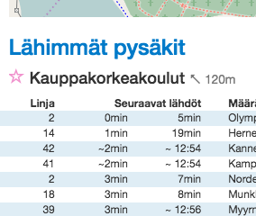
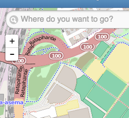
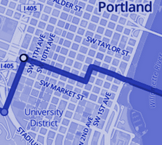

User interface demos

Front page demo
HSL Now is a prototype for "Reittiopas frontpage". Basically, it is a technical POC that shows possibilities with Geolocation and search.

Map demo
Navigator proto is a POC for navigation and showing real time vehicle information on a map.
Data API interfaces

Open Trip Planner
Routing is implemented by Open Trip Planner. It also offers a rudimentary UI for route planning.
Route data and conversion components

Open source code. Join us in GitHub.
All our code is based on open source and is stored in GitHub.
Open data. By HSL, Liikennevirasto and others.
Route and realtime data across the Finland.
Open interfaces. Please, use our APIs.
APIs are available for everyone to use.
Open development. Kanban style.
Checkout our our wiki, milestones and Kanban board